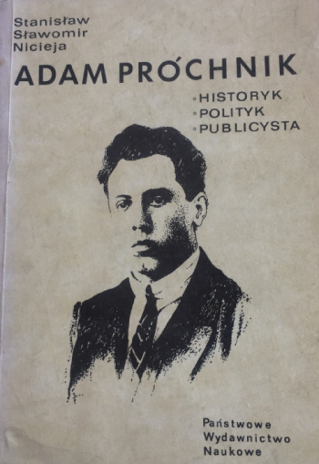

Adam Próchnik
Biografia Adama Próchnika historyka, - polityka, - publicysty - należącego do czołowych indywidualności II Rzeczypospolitej związanych z Polską Partią Socjalistyczną.
Biografia Adama Próchnika historyka, - polityka, - publicysty - należącego do czołowych indywidualności II Rzeczypospolitej związanych z Polską Partią Socjalistyczną.
Projekt okładki: Bolesław Polnar
Redakcja: Andrzej Gawerski
Wydawnictwo: PWN